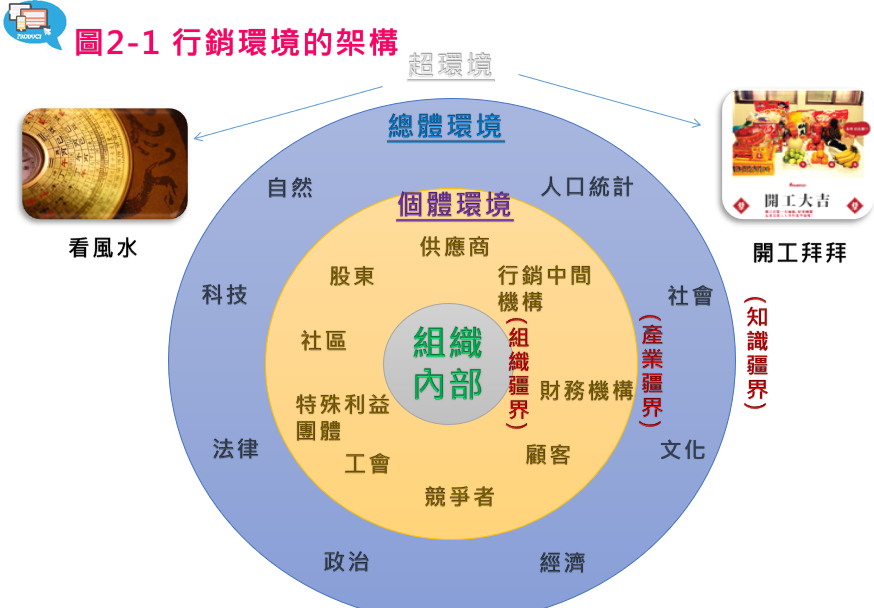
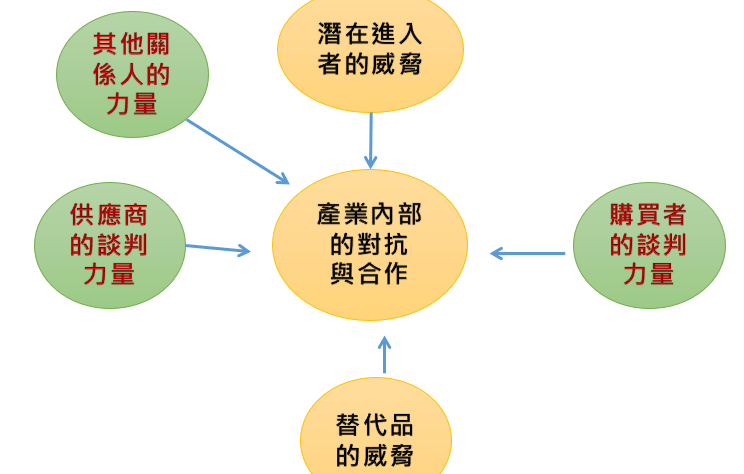
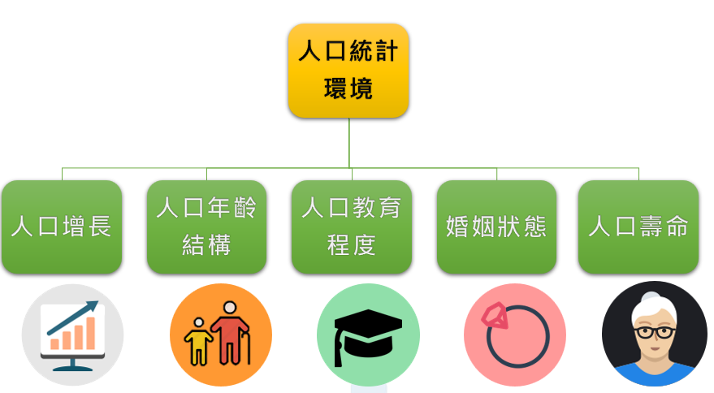
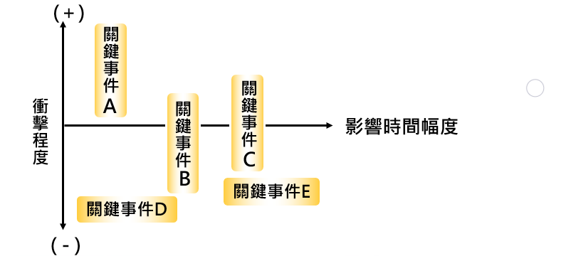
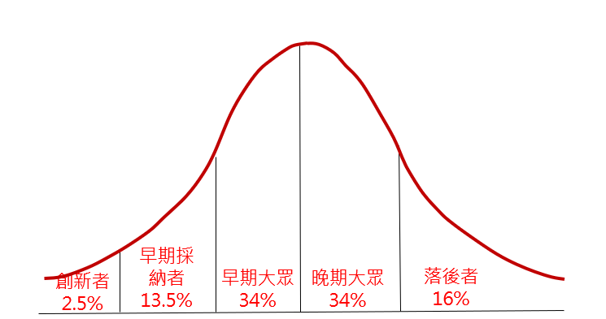
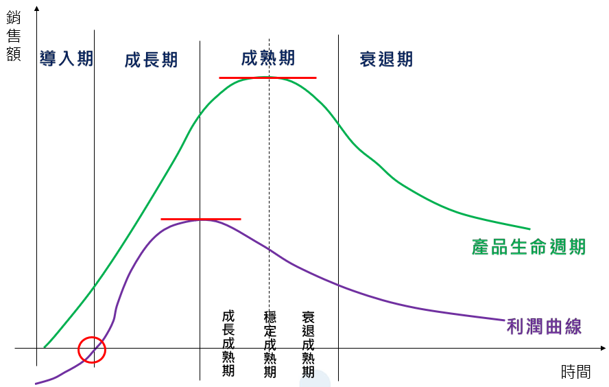

陳杰龍的筆記網站
陳杰龍的筆記網站 主頁
主頁 歸檔
歸檔 分類
分類 其他
其他 關於我
關於我 行銷管理期末筆記
行銷管理期末筆記
2.1 環境分析的架構
- 環境是指組織外部的環境
- 行銷環境可以分成以下三種：
- 個體環境(直接環境)
- 對組織的經營有直接與立即影響的環境因素。
- 總體環境(間接環境)
- 對組織的經營有間接影響的環境因素。
- 超環境(鬼神環境)
- 指外界一些冥冥不可知的力量。
 - 個體環境(直接環境)
2.2.2 個體環境的分析架構
-
Michael Porter的五力分析：

2.3.1.1 人口統計環境
-

- 台灣人口變化的影響
- 人口增長：台灣在2020，死亡率高於出生率，人口開始呈現自然減少
對於基本生活必需品需求降低，例如食物、衣服和住房，銷售也可能會受到影響 - 人口年齡結構：台灣在1993成為高齡化社會，2018年轉為高齡社會，推估將於2025年邁入超高齡社會
對於提供養老和醫療服務的產品需求增加，例如長者住宅、輔助器具和醫療用品、保健品、藥物和保健用品，銷售也可能會提升
幼兒相關產品與服務銷售也可能會降低 - 人口教育程度：台灣在108年底教育程度以大專以上者957.0萬人（占46.47％）最多，且呈逐年增加趨勢
會提高人們對於產品質量和功能的要求，同時也會增加消費者對於新技術和創新產品的需求，對於一些高科技產品，例如電腦、手機和電子產品，高品質的服務，例如教育和培訓，銷售也可能會有所提升 - 婚姻狀況：台灣目前年輕人因為許多原因不願意結婚，且離婚率為亞洲第一
對企業來說，好壞都有影響，必須調整商品或服務型態，未必是雙人或者多人，許多公司提出單身的服務或者商品，來提高銷售 - 人口壽命：台灣人口壽命是逐年增加的，且常常創新高
與台灣人口年齡結構變化影響一樣
- 人口增長：台灣在2020，死亡率高於出生率，人口開始呈現自然減少
2.3.2 總體環境的分析
- 行銷學人員只選擇某些關鍵的環境事件，來對其發展與未來趨勢進行監控，如此便可以有限的資源來對總體環境做最有效的掌握。

4.5.1 知覺
- 知覺：消費者進行選擇、組織及解釋外界的「刺激」，並給予有意義及完整圖像的一個過程。
- 選擇性偏誤可分為四種：
- 選擇性展露
- 有一部分的刺激或訊息出現時，消費者可能不在場 e.g.看電視轉台
- 選擇性注意
- 消費者會注意到某些刺激也會忽略掉某些刺激，視而不見 e.g.有趣的廣告
- 選擇性扭曲
- 會對那些與自我感覺或信念衝突的資訊進行改變或曲解。e.g.聽到三年內都可維修，就覺得產品不好
- 選擇性記憶
- 我們只會記得那些支持個人信念與感覺的資訊 e.g.對家中的電話記得很清楚，剛認識的朋友電話記不住
- 選擇性展露
6.2.2 有效市場區隔的準則
有效的市場區隔，必須滿足下列五點準則- 異質性(heterogeneous)
- 經由區隔變數切割後的區隔市場，必須具有不同的偏好與需要，區隔出來差異越大，意義越大
- 足量性(substantial)
- 經劃分後的市場區隔必須夠大，以保證其能發展和支持某一特定的行銷組合
- 可衡量性(measurable)
- 每個區隔市場內的規模大小及其購買力也應該可以清楚衡量
- 可接近性(accessible)
- 行銷人員必須能夠有效地運用行銷組合，來接觸和服務所選定的區隔市場
- 可回應性(actionable)
- 以公司的資源和能力來看，行銷人員應該能從所劃分的眾多區隔市場中，至少找到一個可以進入的區隔市場，否則這樣的區隔動作便失去意義
- 心理變數
- 氣候 e.g.火鍋、冰淇淋
- 人口密度 e.g.百貨公司
- 城市大小 e.g.大眾運輸系統的廠商
- 區域 e.g.飯店、藝人
- 國家 e.g.有些旅行社專門提供特定國家的旅遊商品
- 人口統計變數
- 年齡 e.g.奶粉、保健食品
- 性別 e.g.化妝品、衣服
- 所得 e.g.豪宅
- 種族 e.g.台語電視台、客語電視台、外勞雜貨店
- 家庭生命週期 e.g.不同階段有不同需求
- 教育程度 e.g.電腦軟硬體、書籍
- 職業 e.g.蠻牛、保力達、領帶、皮鞋
- 宗教 e.g.素食餐廳、問生辰八字
- 心理變數
- 人格特質 e.g.買車喜歡速度感，可能喜歡冒險，追求刺激
- 動機 e.g.新奇的造型、材質與設計
- 生活型態 e.g.吉普車，喜歡野外活動
- 行為變數
- 追求的利益 e.g.根據消費者的需要與慾望來區分 高露潔->放蛀牙 黑人->潔白
- 時機 e.g.週年慶、母親節
- 使用率 e.g.網路費，使用不同的頻寬速度有不同的使用率
- 忠誠度 e.g. Apple
7.3.1 產品組合的管理
在思考廠商的產品組合是否恰當時，可以考慮以下四個指標：- 廣度
- 指產品組合內，廠商所擁有產品線的數目
- 長度
- 指產品組合內，廠商所擁有產品品項的數目
- 深度
- 指產品組合內，平均每一產品項目，可供顧客選擇的樣式多寡
- 一致性
- 指產品組合內，各產品線在最終用途、生產需求、行銷通路與其他方面的關聯程度
- 廣度：4
- 長度：18，平均長度：4.5
- 深度：如果男西裝有4種規格、3種顏色，深度為12
8.3.1 創新擴散模式
- 創新擴散(diffusion of innovation)是指從第一位到最後一位目標顧客接受和採納新產品的過程
 - 創新者
- 創新者急於嘗試新產品，他們除了擁有高收入外，也較具世界觀，個性主動積極，並且富有冒險精神
- 早期採納者
- 較依賴團體規範及價值觀，通常對當地社會較為關切。這些人通常會成為意見領袖，受他人尊重為其特徵
- 早期大眾
- 會衡量採用新產品的優、缺點，他們會蒐集較多的資訊，並評估多種品牌
- 晚期大眾
- 主要是受朋友影響而使用新產品，他們主要是受到團體壓力的影響而接納新產品
- 落後者
- 他們受傳統的影響比較大，相當保守，一般在創新的後期，才開始接受創新
8.4.1 產品生命週期的內涵
- 導入期
- 產品生命週期的導入期表示新產品初次正式出現在市場上的時間
- 導入期的銷售量很小，競爭者也很少
- 顧客的需要屬於初級需求
- 成長期
- 一項產品歷經導入期後，若導入成功，則開始步入產品生命週期的成長期
- 顧客的需求則轉而以次級需求為主
- 成熟期
- 成熟期的銷售量在觸及銷售頂峰後，開始降低，利潤也早在銷售觸及頂峰前開始遞減下滑
- 成熟期是產品生命週期歷時最久的一個階段
- 衰退期
- 銷售量趨於下降表示開始進入衰退期
- 衰退期衰退的速度決定於消費者偏好改變或改用替代品的速度
- 衰退期的策略以減縮經營為主
- 舉例
- 流行->不流行
- 攜帶式 CD 播放器、電子辭典、黑膠唱片、紙地圖
- 不流行->流行
- 智慧型手機、網路銀行、電動車、物聯網、太陽能發電
- 流行->不流行->流行
- 1990年代，穿著滑板鞋或聽搖滾樂很流行，但在2000年代初期，它們都不再流行。如今，滑板鞋和搖滾樂又再次成為潮流
- 玩電子遊戲很流行，但隨著手機和平板電腦的普及，玩電子遊戲不再那麼流行。然而，近年來，由於電子競技和虛擬實境技術(元宇宙)的發展，玩電子遊戲再次成為一種流行的娛樂活動
- 流行->不流行

9.4.1 服務作業系統
- SOP目的
- 複雜事務標準化與簡化
- 有效地降低失誤與疏失之狀況
- 加油站SOP
- 進站
- 先確認車輛油箱位置
- 並以手勢及招呼方式正確引導車輛至加油島
- 大聲呼喊引導車輛進站
- 指揮駕駛人導入適當停車位置，避免車輛離加 油設備間隔過寬，車輛間距離過近
- 加油前
- 確認車輛完全熄火
- 詢問顧客加注之油品及金額
- 以重複複誦的方式告知顧客，確認使用的油品及金額無誤
- 打開車輛油箱蓋
- 提起油槍，槍口朝上，並將加油槍放置油箱口
- 加油中
- 大聲告知客戶油錶歸零
- 油槍放入油箱口
- 油槍應與油箱蓋口密切接觸，以疏導靜電
- 扣緊板機加油
- 加油中隨時注意油料有無漏出、加油槍是否可自動跳停與有無顧客抽菸
- 加油後
- 待加油槍自動跳停功能跳脫後，須立即停止繼 續加注油品
- 將油槍後方握把向上微舉約3~5秒，使油管內 殘餘油品完全滴完，取出後將加油槍口朝上
- 掛上油槍後，才進行結帳
- 出站
- 加油員應以手勢及招呼方式將車輛引導至出口 方向，離開加油站
- 大聲呼喊引導車輛出站
- 謹慎指揮駕駛人順利駛出加油站，並避免車輛 間距離過近
- 進站
- SOP沒做好的狀況
- 加油未完成，顧客誤以為已加好油駛出！(客人未注意到還沒完成加油，就開車走，導致火災)
- 加油加到火燒車！(工讀生加完油不小把油滴到排氣管，造成火燒車)
- 加油站工讀生聽錯金額！
- 汽油滴出來! 客拒付錢 遭加油站員工揮拳！
12.3.4 擬訂推廣組合
舉例公司某產品的推廣方式及優缺點- 電影《魅笑》(Smile) 團隊入侵美國 MLB 美職棒球賽，在直播期間露出詭異笑容
利用球賽直播中，在後面的畫面中有人露出詭異笑容，大家還以為這是甚麼人，結果原來是推廣電影的人，利用MLB美國職棒大聯盟的名氣來行銷電影- 優點
- 行銷費用大幅降低：只需要花請1、2個人的工錢以及門票錢，即可在觀眾人數非常多的直播或電視台達到行銷效果
- 廣告目的不強，觀眾興趣發掘：利用這種方式會讓大家覺得他們到底是誰，到底在這裡幹嘛，就容易達到行銷效果
- 缺點
- 行銷的邊際效用遞減明顯：或許這在幾場比賽之後就沒了效果，畢竟大家都知道這是電影的廣告
- 無法量化行銷效果：無法知道明確行銷數據，無法進行分析與推測
- 優點
- 漢堡王推出「華堡祭」（Whopper Sacrifice）：刪好友，送經典大漢堡的活動。只要你刪掉十個臉書好友，漢堡王就送你一個。這個活動最邪惡的地方在於，被刪掉的人會收到通知說，同事要漢堡不要他
- 優點
- 我認為這種行銷方式沒有任何優點。如果您要推廣您的產品，您應該尋找一種真正有效的方式，而不是透過這種方式來獲得客戶的注意。您應該試著找出客戶的需求，並提供他們真正需要的產品。這樣才能讓客戶真正感興趣，並有可能購買您的產品
- 缺點
- 第一印象 真的假的？：這樣做可能會讓客戶覺得您的公司是不誠實的
- 重視臉書好友關係：許多人都重視自己的交友狀況，因此這樣做可能會令客戶反感
- 無法增加銷售：客戶可能不會因為換到一個免費的漢堡就立即購買您的其他產品
- 優點